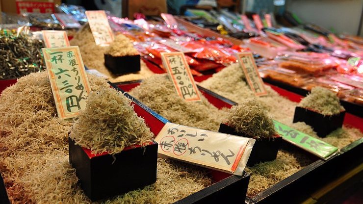

Nishiki Market
錦市場
Nishiki Market (錦市場, Nishiki Ichiba) is a narrow, five block long shopping street lined by more than one hundred shops and restaurants. Known as "Kyoto's Kitchen", this lively retail market specializes in all things food related, like fresh seafood, produce, knives and cookware, and is a great place to find seasonal foods and Kyoto specialties, such as Japanese sweets, pickles, dried seafood and sushi.
Nishiki Market has a pleasant but busy atmosphere that is inviting to those who want to explore the variety of culinary delights that Kyoto is famous for. The stores range from small narrow stalls to larger two story shops. Most specialize in a particular type of food, and almost everything sold at the market is locally produced and procured.
Some of the shops freely give out samples or sell sample dishes and skewers meant to be eaten then and there. There are also a few small restaurants and food stands selling ready-made food. A few are sit-down establishments, although some consist of no more than a couple of stools and a bar. They usually specialize in one type of food and are often attached to a store of the same specialty. Make sure to refrain from eating while walking as it is considered bad manners and a major nuicance by local shoppers.
The market has a history of several centuries, and many stores have been operated by the same families for generations. It all started as a fish wholesale district, with the first shop opening around 1310. A larger variety of shops moved in later, and the area changed from a wholesale market to retail. Today it remains an important market for Kyoto and is often packed with locals and tourists alike.
